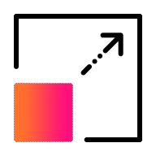

请访问原文链接：Splunk Enterprise 10.4.2 (macOS, Linux, Windows) - 搜索、分析和可视化，数据全面洞察平台 查看最新版。原创作品，转载请保留出处。
作者主页：sysin.org
Splunk Enterprise
对所有数据进行搜索、分析和可视化，获得可执行的洞察。

工作原理
Splunk 平台实现了从边缘到云的端到端可视化

搜索您的数据
探索任何类型和价值的数据——无论它存在于您的数据生态系统中的何处。

分析您的数据
通过监控、告警和运营报告，推动业务韧性。

可视化您的数据
创建自定义仪表盘和数据可视化 (sysin)，从任何地方解锁洞察——无论是在运营中心、桌面、现场还是移动中。

基于数据采取行动
利用来自组织任何地方的数据，让您快速做出有意义的决策。

核心功能
随时随地访问您的数据
无论是在本地、家中、数据中心，还是多种环境的统一混合体验，均可利用平台。
机器学习与人工智能
预测与预防，而非仅仅反应。通过为数据赋予机器级智能，提升安全性和业务成果。
数据流处理
通过实时流处理，在毫秒级别内采集、处理并分发数据到 Splunk 及其他目的地。
可扩展索引

从数千个数据源采集和摄取数据 (sysin)，规模达数 TB 级别。
协作工具
借助移动设备、电视和增强现实功能，实现随时随地的互动与协作。
分析工作区
即时响应，利用可视化功能。将日志转换为指标，提升搜索和监控性能，简化告警功能。
强大仪表盘
使用直观的仪表盘构建体验，轻松传达即使是最复杂的数据故事。
由 Splunk AI 驱动
Splunk AI 功能解锁更深入的洞察，加速人类决策与威胁响应。使用我们免费的机器学习应用——Splunk AI Assistant、异常检测助手、深度学习与数据科学应用以及机器学习工具包。此外，机器学习贯穿于我们的产品中，包括 Splunk IT 服务智能 (ITSI)、Splunk 用户行为分析 (UBA) 等。

系统要求
Splunk Enterprise 10 要求以下系统：
Linux x64：
- RHEL 8、9、10 及其兼容发行版
- Ubuntu 22.04、Ubuntu 24.04
- Debian 11、12
- 参看：Linux 产品链接汇总
- Universal Forwarder 几乎兼容所有架构的类 Unix 系统。
Windows x64：
- Windows Server 2025，OVF
- Windows Server 2022，OVF
- Windows Server 2019，OVF
- Windows Server 2016，OVF
- 参看：Windows 下载汇总
- Universal Forwarder 兼容 Windows 10 及以上版本，包含 32-bit 和 64-bit。
macOS (x64, AArch64)：
macOS Tahoe 有限支持。
新增功能
新增大量令人激动的功能，篇幅较长，此处略过，详见本站相关发布。
下载地址
Splunk Enterprise 10.0 for macOS, Linux, Windows (2026-01-28)
请指定一个系统平台和版本。此产品用于学习和研究，推荐 Windows 版本，几乎是一键运行。
- for macOS x64 (dmg): https://pan.baidu.com/s/1Lx-j9qoWl2c9PpqDbdSbkQ?pwd= <专享>
- for Linux x64 (rpm, deb, tgz): https://pan.baidu.com/s/1s_L3KhwWSN72JAwIwy0Fkw?pwd= <专享>
- for Windows x64 (msi): https://pan.baidu.com/s/19uL41076AY2J5ZPHqnb1Nw?pwd= <专享>
10.0.1 was released on September 25, 2025. bug fixs & add Windows Server 2016 support.
10.0.2 was released on November 14, 2025. bug fixs only.
10.0.3 was released on January 28, 2026. bug fixs only.
| 操作系统 | 架构 | 版本要求 | 文件名（格式） | 大小 |
|---|---|---|---|---|
| Linux | 64-bit | 4.x+, 5.x+ kernel Linux distributions | .deb | 1290.48 MB |
| .rpm | 576.76 MB | |||
| .tgz | 1646.48 MB | |||
| macOS | Intel | macOS 13, 14, 15 | .dmg | 916.86 MB |
| Windows | 64-bit | 2019, 2022, 2025 | .msi | 1052.2 MB |
Splunk Universal Forwarder 10.0.0 for Unix, Linux, Windows
- 百度网盘链接：
[EoD]
| 操作系统 | 架构 | 版本要求 | 文件名（格式） | 大小 |
|---|---|---|---|---|
| Linux | PPCLE | 4.x+, 5.x+ kernel Linux distributions | .rpm | 28.06 MB |
| .tgz | 28.02 MB | |||
| 64-bit | 4.x+, 5.x+, or 6.x+ kernel Linux distributions | .deb | 30.57 MB | |
| .rpm | 42.01 MB | |||
| .tgz | 42.17 MB | |||
| ARM | 4.14+, 5.4+ kernel Linux distributions with libc v2.21+, 6.x+ kernel, Graviton+ Servers 64-bit | .tgz | 26.87 MB | |
| s390x | 4.x+, 5.x+ kernel Linux distributions | .rpm | 26.26 MB | |
| .tgz | 26.51 MB | |||
| macOS | Apple/Intel | macOS 13, 14, 15 | .dmg | 63.0 MB |
| .tgz | 59.38 MB | |||
| Intel | macOS 13, 14, 15 | .dmg | 36.89 MB | |
| .tgz | 33.42 MB | |||
| FreeBSD | 64-bit | FreeBSD 13, 14 | .tgz | 24.27 MB |
| .txz | 19.59 MB | |||
| Solaris | Sparc | Solaris 11 | .Z | 34.25 MB |
| .p5p | 26.14 MB | |||
| 64-bit | Solaris 11 | .Z | 35.87 MB | |
| .p5p | 27.1 MB | |||
| AIX | PPC | AIX 7.2, 7.3 | .tgz | 63.49 MB |
| Windows | 64-bit | Windows 10, Windows 11, 2019, 2022, 2025 | .msi | 75.56 MB |
| 32-bit | Windows 10 | .msi | 62.51 MB |
Splunk Enterprise 10.2.x for macOS, Linux, Windows (2026-03-31)
- Splunk Enterprise 10.2.3 was released on April 30, 2026. bug fixs only.
- Splunk Enterprise 10.2.2 was released on March 31, 2026. bug fixs only.
- Splunk Enterprise 10.2.1 was released on February 27, 2026. bug fixs only.
- 重大更新：10.2.1 首次发布 Universal2 Binary！
Splunk Enterprise 10.4.x for macOS, Linux, Windows (2026-05-18)
Splunk 10.4.2 (2026-07-29) 仅 bug 修复，学习研究场景一般请忽略。
Splunk 10.4.1 (2026-06-30) 仅 bug 修复，学习研究场景一般请忽略。
重大更新：10.4.0 原生支持 Apple Silicon！
请指定一个系统平台和版本。
- for macOS x64 (dmg): https://pan.baidu.com/s/1Lx-j9qoWl2c9PpqDbdSbkQ?pwd= <专享>
- for macOS ARM64 (dmg): https://pan.baidu.com/s/1Lx-j9qoWl2c9PpqDbdSbkQ?pwd= <专享>
- for Linux x64 (rpm, deb, tgz): https://pan.baidu.com/s/1s_L3KhwWSN72JAwIwy0Fkw?pwd= <专享>
- for Windows x64 (msi): https://pan.baidu.com/s/19uL41076AY2J5ZPHqnb1Nw?pwd= <专享>
相关参考：Gartner 安全信息和事件管理 (SIEM) 魔力象限 2025
更多：HTTP 协议与安全

文章用于推荐和分享优秀的软件产品及其相关技术，所有软件提供免费版或试用版。内容若侵犯了您的版权，请联系作者删除。如果您喜欢这篇文章，或者觉得它对您有所帮助，亦或发现有不当之处；欢迎发表评论，也欢迎分享这个网站，或者赞赏一下，谢谢！提示：捐赠或赞赏属于自愿赠予行为，提交后即表示您对作者的支持与认可。为避免误操作，请在确认前仔细检查金额，支付完成后将无法撤销或退还。
 支付宝赞赏
支付宝赞赏  微信赞赏
微信赞赏赞赏一下
敬请注册！点击 “登录” - “用户注册”（已知不支持 21.cn/189.cn 邮箱）。 请勿使用联合登录（已关闭）。